简易步骤
01、安装git https://git-scm.com/downloads
02、配置信息：
git config --global user.name "Your Name"
git config --global user.email "12345678@163.com"
03、创建ssh密钥，并且验证是否成功，然后在github上添加一个SSH key，将公钥id_rsa.pub添加到SSH key
ssh-keygen -t rsa -C "12345678@163.com"
ssh -T git@github.com
04、创建本地仓库：在你需要上传文件的目录下右键Git Bash Here，输入指令：
git init
05、创建远程仓库：打开浏览器，登录github，在github上创建一个新的仓库，点击右上角的“+”，点击new repository（新存储库）
06、建立本地仓库与远程仓库的连接并查看仓库是否配置成功：
git remote add origin git@github.com:Rengar0/project1.git
git remote -v
07、添加文件到暂存区：
添加单个文件：git add "index.html"
添加全部文件：git add ./
查看仓库变更状态：git status
08、提交到版本库：
git commit -m "备注"
09、推送到远程仓库：
git push -u origin master
10、创建gh-pages分支展示自己的项目：
git checkout --orphan gh-pages
git push origin gh-pages
11、查看项目地址：点击刚刚推送了文件的存储库，默认展示的是Code页，点击最后的Settings，在Settings的Options选项往下拉，找到GitHub Pages，你的项目展示地址就是 https://rengar0.github.io/ivy/
删除存储库也是在这里：就在GitHub Pages下面，往下滑一下，找到Danger Zone-->Delete this repository
图文教程
一、安装github
首先，到官网下载安装git(https://git-scm.com/downloads)，勾选在桌面生成应用程序图标
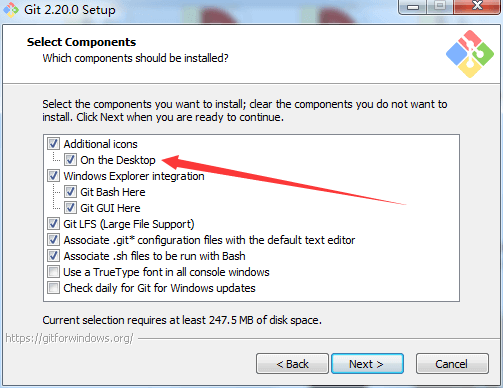二、配置个人信息
在桌面打开Git Bash，输入一下指令
git config --global user.name "Your Name"
git config --global user.email "12345678@163.com"
user.name就是你的用户名，这个用户名可以随便取；user.email就是你注册github的邮箱或者github账号绑定的邮箱
git config --list查看配置信息，user.name跟user.email就有了（图片的最下面）
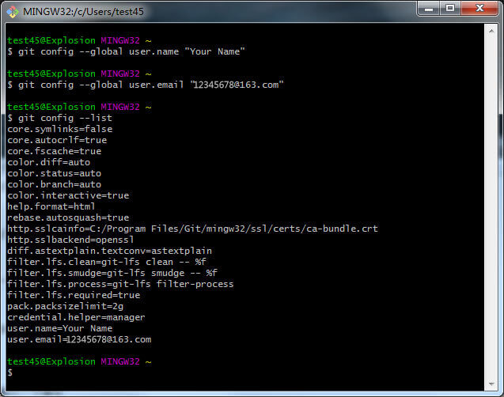三、创建ssh密钥
在桌面打开Git Bash，输入指令：ssh-keygen -t rsa -C "12345678@163.com"，然后一直回车直到完成（Overwrite的时候，输入yes，回车即可）
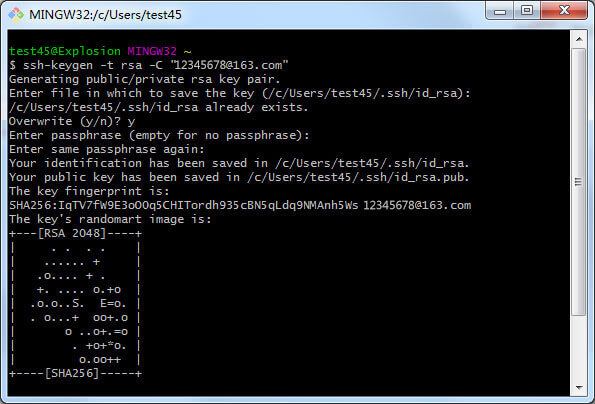为了验证是否成功，在git bash下输入：ssh -T git@github.com。或者直接在C盘搜索：.ssh，在.ssh文件夹下面有两个密钥，一个是私钥id_rsa，一个是公钥id_rsa.pub
如果是第一次的会提示是否continue，输入yes就会看到：You've successfully authenticated, but GitHub does not provide shell access 。这就表示已成功连上github。
然后，在浏览器登录github(https://github.com/)，在github上面新建一个sshkey
ps:输入ssh -T git@github.com报错git@github.com: Permission denied (publickey).是因为你重新配置了个人信息，本机的公钥跟github的公钥不匹配，所以要在github上面再添加一个SSH key将本机的公钥复制上去即可
然后在C盘（如果Git安装在C盘）搜索id_rsa.pub，用记事本或者其他note工具（notepad++、editplus）打开id_rsa.pub文件，复制里面的内容（Ctrl + A全选，Ctrl + C复制）
将刚刚复制的id_rsa.pub文件里面的内容粘贴到这里来，点击Add SSH key即可（因为我已经添加过一个SSH了，所以添加成功的结果可以在上面那张图看到）
四、创建本地仓库
进入你自己做好了的项目的目录（D:\workspace\ivy），右键Git Bash Here，输入指令：git init，这个时候，会在该目录下创建一个.git的隐藏文件夹，你的项目目录就成了一个git的仓库。
git仓库包含两个部分，一个是暂存区，一个是版本库
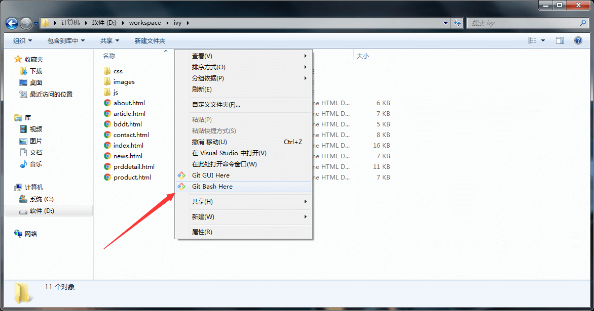 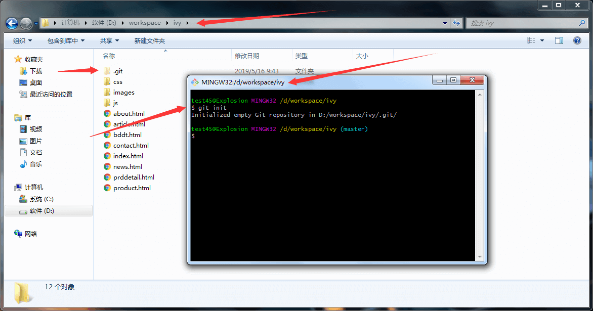五、创建远程仓库
打开浏览器，登录github，在github上创建一个新的仓库，点击右上角的“+”，点击new repository（新存储库），Repository name（存储库名称）用英文不要用中文，Description (optional)（说明（可选））这里可以写中文，权限勾选Public，点击Create repository即可，创建成功之后就可以拿到远程仓库的地址：git@github.com:Rengar0/project1.git
六、建立本地仓库与远程仓库的连接
回到git本地仓库，输入指令：git remote add origin git@github.com:Rengar0/project1.git
查看仓库是否配置成功：git remote -v
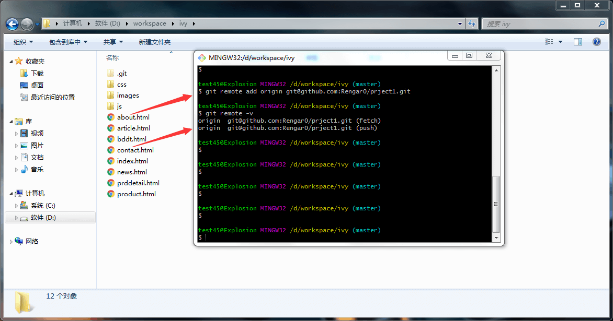如果你添加了许多的地址（你创建了很多个远程仓库），可能就需要考虑用那个地址，这里有一个切换指令：git remote set-url origin git@github.com:Rengar0/ivy.git
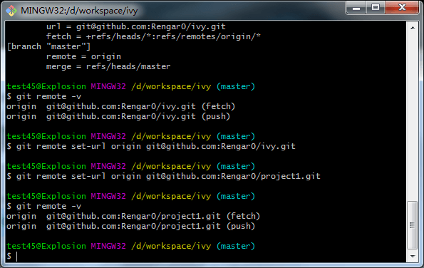删除远程地址：git remote rm git@github.com:Rengar0/project1.git（该指令会报错：fatal: No such remote: 'git@github.com:Rengar0/project1.git'）
所以，用这条：git remote rm origin
七、添加文件到暂存区
添加单个文件：git add "index.html"
添加全部文件：git add ./
查看仓库变更状态：git status
对比文件：git diff <file>（git diff "index.html"）
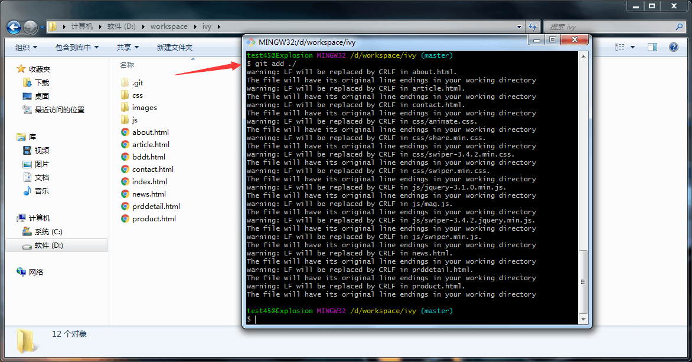 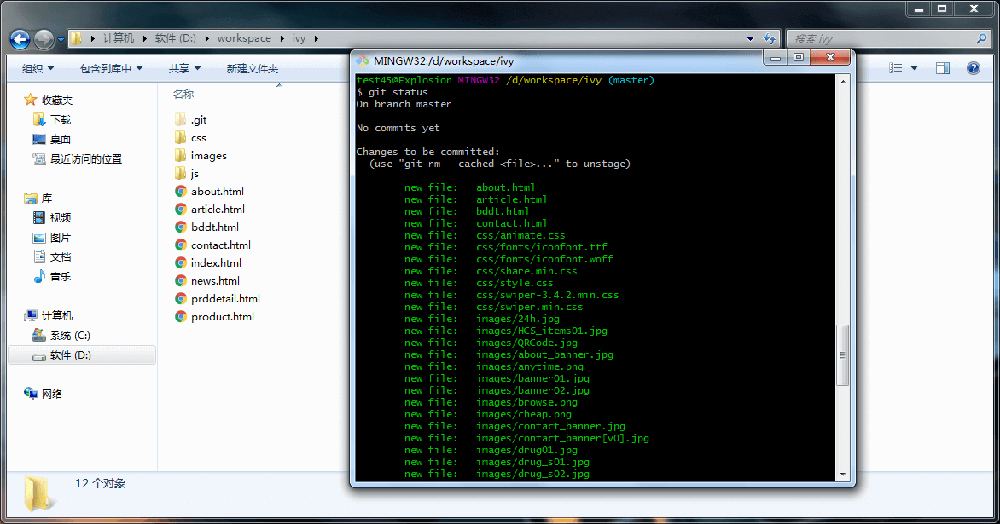八、提交到版本库
git commit -m "备注"
九、推送到远程仓库
第一次使用git push -u origin master后，之后就可以用简写命名：git push origin
这里推送到的是远程仓库的master分支
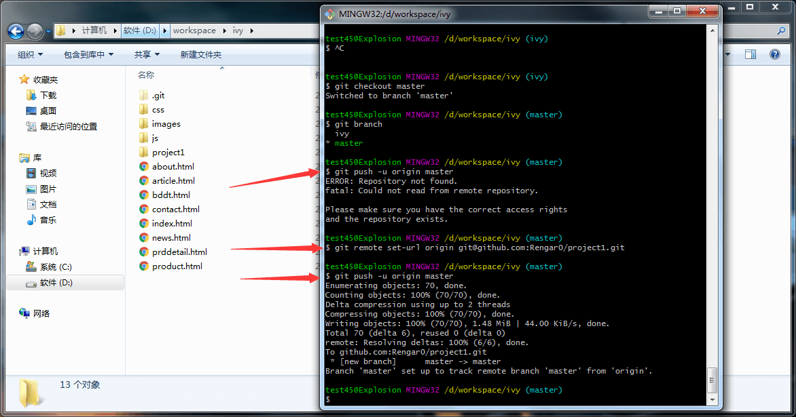十、创建gh-pages分支展示自己的项目
创建gh-pages分支指令：git checkout --orphan gh-pages
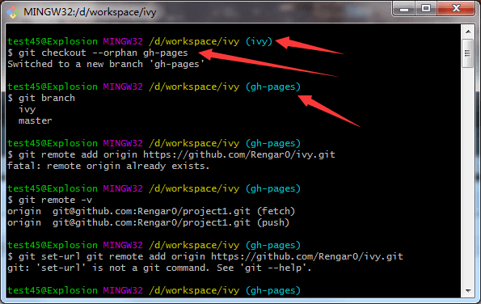推送到远程仓库的gh-pages分支：git push origin gh-pages
或者直接推送到master分支，直接用master分支展示
十一、项目地址
点击进入你项目所在的那个存储库，然后按照以下步骤即可
打开https://rengar0.github.io/ivy/就可以让别人看到你自己做的项目啦！
----------END----------
拓展知识：
克隆远程仓库到本地
[01]、新建一个空文件夹，文件夹名称尽量用英文吧
[02]、初始化文件夹成一个git仓库，git init
[03]、连接上别人的远程仓库git remote add origin git@github.com:Rengar0/project1.git
PS：若不是空文件夹，则报错：fatal: destination path 'project1' already exists and is not an empty directory.
[04]、查看远程仓库是否连接成功git remote -v
[05]、连接成功之后执行git clone git@github.com:Rengar0/project1.git
[06]、等待即可完成克隆
PS：查看别人的远程仓库地址：点击绿色按钮Clone or download，若需要用http克隆，则点击右上角Use HTTPS
连接命令：git remote add origin git@github.com:Rengar0/project1.git
克隆命令：git clone https://github.com/Rengar0/project1.git
如何创建远程分支？
1、添加本地分支：git branch ivy
2、查看本地分支：git branch
3、切换分支：git checkout ivy
4、查看本地正在使用的分支：git branch
5、将本地分支推送到远程：git push origin ivy
6、查看远程分支：git branch -r
7、在github上面查看分支
8、已在github上成功创建ivy分支
验证当前提交树的内容已经是update以后的内容
git write-tree
git cat-file -p 1a8a498b4a08dcb86c839ed8aa3d59a823eb4499